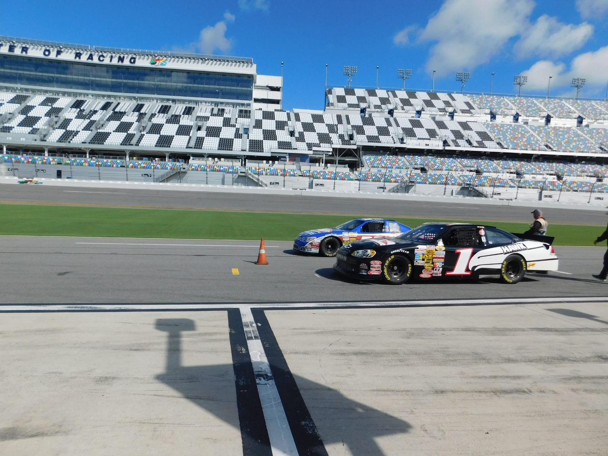
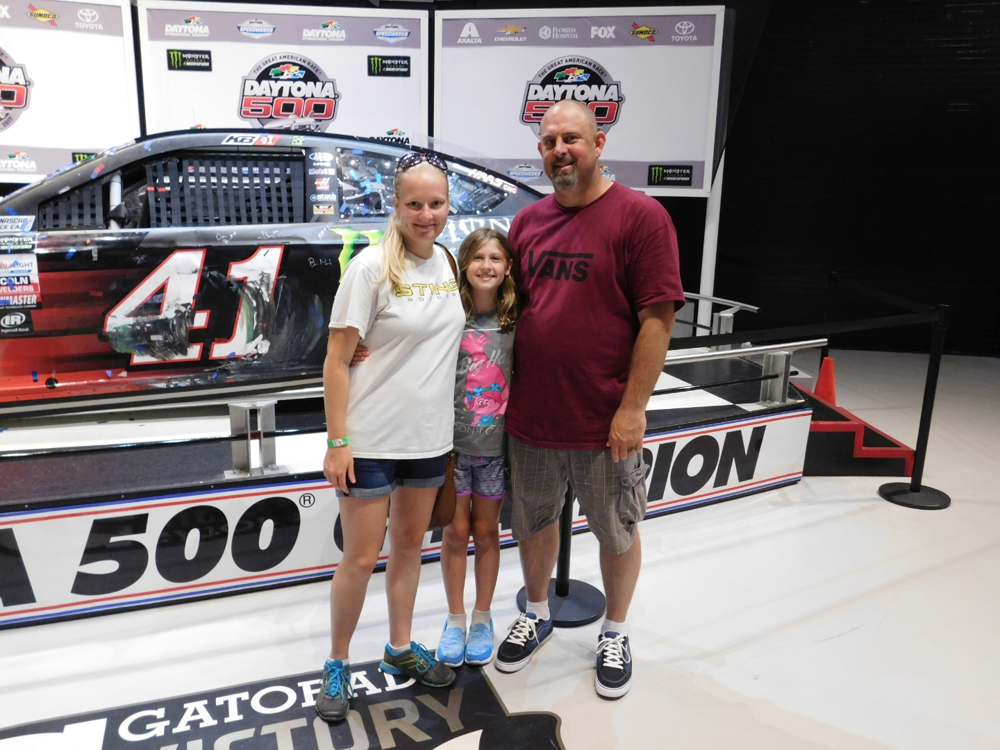
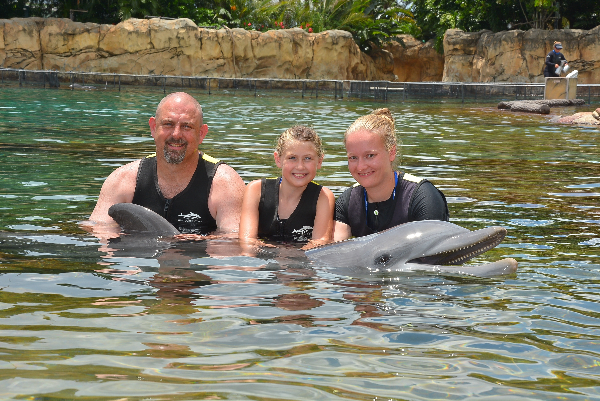
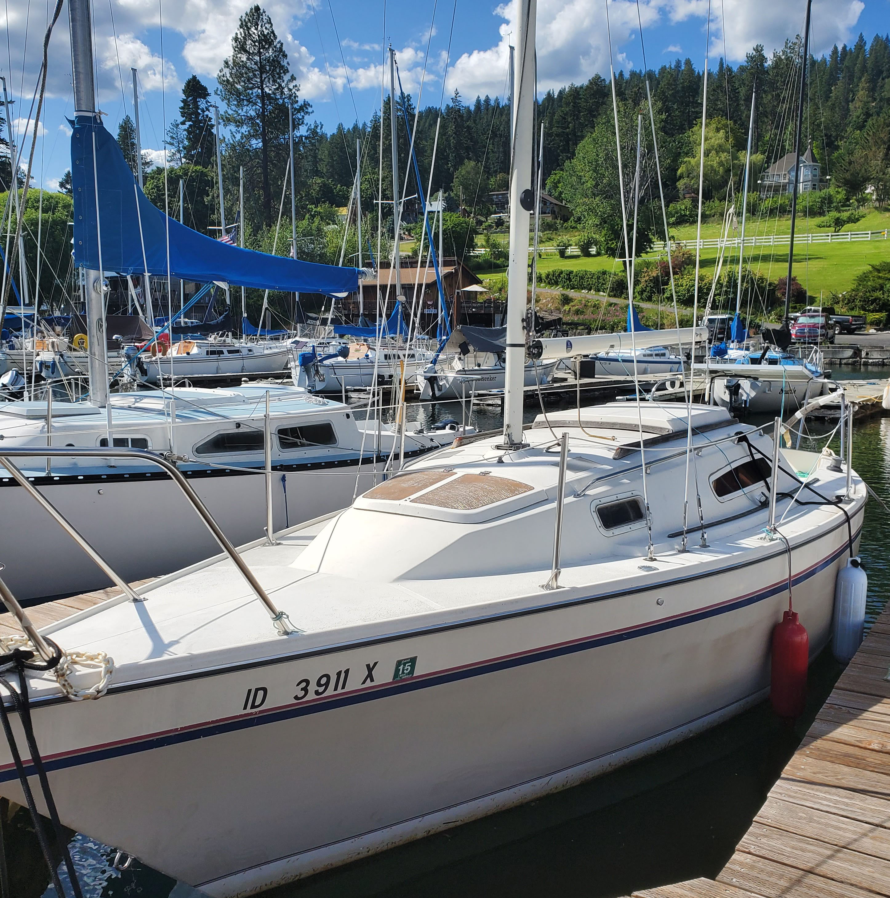

Jason has been an employee at Walmart for over ten years. He has had a vast career spanning from stocker to management. He has worked in numerous careers and fields, and is the father of two children. Jason has lived in several different parts of the county and enjoys travelling and NASCAR. His current goals are set on the sea. Recently he became the captain of a 38 foot Erickson, Kolika, and is hoping to set sail soon and navigate the world.
Jason has a love for all things mechanical and dreamed to someday be a pilot. Learning that in essence a sailboat is just a large plane underwater changed the course of his life's goals. He worked for a number of years in the automotive field and has experience with just about anything with a motor. His skills are not limited to motors he also has extensive knowledge of hydroponics, has built coops and raised chickens, and even experimented with canning. His thirst for knowledge and drive to constantly learn new things means that there is never a lack of adventure.
Born on April 29th, 1975 to Julie and Jack Printz, Jason was the first born, the couple would later have a second child, Jason's younger sister. At the time of his birth, Jason's mother was fifteen years old and his father nineteen. With two young parents, Jason spent alot of time in the care of his grandparents, Gene and Francis VanBuskirk. Jason met his best friend Steve when he was four years old, the two were neighbors and would remain long-time friends, even though through the years they did not always stay speaking to one another. Jason was a quiet and shy child, who was very bright and showed great potential in school. He played soccer as a child and would later play football in high-school.
Jason remained a quiet child until 6th grade when his reputation took a sharp turn, the quiet shy child had become a tough-as nails fighter. As he matured he was exposed to gang life and spent much of his free time getting into trouble. His parent's divorce left him living alone and having to fend for himself. Soon he found himself in trouble with the law and was expelled from his High School. He moved back in with his father and his father's girlfriend, Katherine. Katherine lived in an upscale neighborhood that varied greatly from the gang-ridden areas he had been used to.
Jason has one biological sister, Joelyn. Through the years he had several step-siblings come into his life. After his parents divorce, Jason's father was in a long-term relationship with a woman, Katherine. Katherine had two children, Ian and Geoffrey who Jason would spend his teenager years with. Jason's mother, Julie, remarried Marcus, who had four daughters, Kristina, Shawna, Rebecca, Erica; who Jason who become very close with as an adult. Growing up in Arizona, most of Jason's family lived there for their entire lives. Aunts, Uncles, and cousins were always together for birthdays and holidays. Jason grew up very close to his mother's brother, Dan, who was only a couple years older than him. Jason would also grow up very close to Dan's children, Cody and Ashley.
In 1995 Jason married his first wife, Carla Printz. Carla and Jason had grown up in the same neighborhood in Phoenix and were just weeks apart in age. While the two did not connect is school soon after they would start a relationship. After living in Phoenix for a short time the two moved in with Carla's parent's in Las Vegas. Carla became pregnant with their son, Zachary. Carla and Jason got married at The Little White Wedding Chapel in Vegas in front of a small group of family. Jason was 19 years old at the time and Carla was 20. In September the two would welcome a bouncing baby boy into the world.
Carla and Jason separated in 2001. Although separated the two would never file for divorce and remain married to this day. Zachary divided his time between staying with his mother and Jason until he was 11 years old. At that time he moved in full time with Carla and would stay with her through his teenage years. Zachary would marry his wife, Brittany, in (YEAR). The two teens would welcome their first child Nikolai into the world in (YEAR). The couple currently reside in South Dakota and have had two more children, Brayden and Kellen.
After Carla and Jason separated Jason started a relationship with Angel Miller. Jason met Angel at Woody's, a bar in Phoenix. Jason was working as a bouncer, and Angel was a regular who came in with a group of her friends. The two quickly moved forward with their relationship when Angel moved in with Jason and his father. At the time Angel was working for a credit card company, at their call center. In 2006 Angel became pregnant with the couple's daughter, Trinity. In September just days before Zachary's birthday, Trinity was born in a Phoenix hospital. The three had lived in a house that Jason's grandfather had built from the creek rock nearby, soon however Jason would have plans to leave the desert sunshine.
Always an adventurer at twenty-two years old Jason travelled to Igueala, Mexico with his friend Juan. Juan took Jason to his home town to celebrate in the Catholic ritual of self-flagellation. Through the ritual Juan would hit his back with a whip that had nails attached; as the nails would get stuck for Juan he would fall down, Jason would lift him back up and the ritual would continue through town. This continued for twenty-four hours. After the ritual there was feasting and celebrating. The small town had never seen anyone like Jason, the culture there being very poor, he received several offers of marriage from locals looking to marry their daughters to the, "wealthy American".
The next great travel adventure that Jason would undertake would be his great "walkabout". Jason got a job with the pipeline and undertook a 3 year long adventure. In total he would travel over (MILES) and make his way from El Paso, TX to Tacoma, WA. Everyday he would wake up and start walking measuring as he went. His crew consisted of 3-4 people and occasionally they would pick up straggling assistance, including Jason's stepbrother, Ian and best-friend, Steve.
After seeing so much of the U.S., Jason set his sights to new adventures "Across the Pond". In 2009 he took a solo travel journey to Amsterdam, England, and Germany. In Amsterdam he experienced the coffee shops specializing in Cannabis and Hash, the allure of the Red-Light district, saw the endless array of street performers, and saw the history of the country in the Anne Frank House and Heineken Brewery. He stopped in England for a good pint and road the trains through Germany.
In 2010, Jason would experience another life changing adventure. A native Arizonian, by 2010 he had enough of the sun and decided north was the way to go. He packed his belongings and was seeking greener pastures. Initially, he was going to go to Salem, OR a place he had loved since he was there when he had been working on the pipeline. When he told his father about his plans to leave, his father told him about a beautiful place that he had grown up in, Coeur D' Alene, ID. As soo as Jason made it to Coeur D' Alene he knew he was home. Long gone were deserts as cacti, now there were lakes, mountains, seasons and pine trees. Jason moved with his girlfriend, Angel and their 3 year old daughter, Trinity. The family would soon find an apartment in nearby Post Falls. Angel went to worked at a local convience store and Jason got a job at the new Walmart that had just finished construction.
Within the next couple of years, Angel and Jason would go their separate ways. Both would be in new relationships; Jason moved in with Jourdan, a former co-worker. Angel developed a relationship with one of her co-workers and moved into the trailer park that he managed. Trinity for a short period went between the two residences before living full time with her father and Jourdan. Jason, Jourdan and Trinity moved to a small four-plex in Hayden and would go one to by a house nearby.
As his life went on, Jason only further continued his love for travel and adventure. To celebrate his 40th birthday he travelled to Amboy, WA to take on the highest bungee jump in the United States. In the middle of the scenic woods is a twenty-story bridge awaiting its next victim. Jason jumped twice, once going fowards the other backwards. Jason loved the experience and the adrenaline rush. He plans on returning someday to jump again.
In 2017 Jason, Trinity, Jourdan and Jourdan's family took a trip to Florida. They swam with dolphins at beautiful Discovery Cove, and to the opportunity to walk under water wearing dive helmets. Amongst the beaches and gators the highlight of the trip for Jason was visiting the mecca of NASCAR, Daytona. While there Jason got the chance to get behind the wheel and drive a race car. After a driver's training class he was ready to put the pedal to the medal. Jason excelled, his max speed was 183 MPH, he won the heat that he was in, lapping one of the other drivers. He made his way to victory lane where he stood like many of his idols before him. There was a trip to the Driver's Hall of Fame museum and a behind the scenes tour of everything NASCAR. To say that Jason was in his element would be an understatement.
By 2019 Jason was nowhere near slowing down. Jason planned a trip to Hawaii with his childhood best friend, Steve and his family. Steve and his wife, Robin had gotten married in Hawaii years earlier and now had 6 year old twins that they had been dying to take back. Jason had taken Trinity shark-diving in Tacoma, WA for her eighth birthday, knowing her love for sharks he could not wait to take her to see some outside of the cage. The trip included plenty of swimming and beach time; good food and drinks abound. Jet skiing in the open ocean was an experience of a lifetime. One of the highlights of the trip was an open water shark dive. Jason, Jourdan, and Trinity were up first. They boarded a boat and were hauled three miles out into the open water, then everyone entered the water while the captain started up the engines to get the sharks attention. Then everyone held tight to a rope from the back of the boat as the sharks came swimming in. This amazing experience was captured on video that Jason took while swimming.
  In 2020 Jason would once again start out for another great life adventure. His girlfriend, Jourdan, had always had a love of the ocean and dreamed of living in a tiny house. With the world in disarray and the two looking for something new the sailing dream seemed inevitable. The two quickly researched a lifestyle that felt like it was only possible in the movies, except maybe it wasn't. Jason started researching day and night everything there was to know about sailing. Jourdan started working on creating a stream of income that would be easily adapted to a remote lifestyle.
In July the two purchased their first fixer-upper project, a 25ft US Yachts. The boat needed a lot of love but managed to stay afloat. Valuable lessons were learned as she got ripped apart and rebuilt. Soon the couple started looking at other options that would be something that could be a "forever home". They took a week trip across the country to go take a look at several boats in Kehma, TX. Although nothing they saw was "the boat". When they returned home from the trip, as luck would have it their dream boat was for sale right in the marine where their 1st boat resided.
The two worked tirelessly to purchase what would some day be their forever home, a 1989 38ft Ericson, Kolika. The boat was in near perfect condition and ready to hit the water. She had been well cared for and loved and the two could not have been happier. With the sale taking place in November, Jason and Jourdan eagerly await the warm summer weather and sunshine. Kolika patiently waiting to hit the waves. Someday the aspiring sailors plan to live full time on the water circumnavigating the world in their tiny house on the sea.